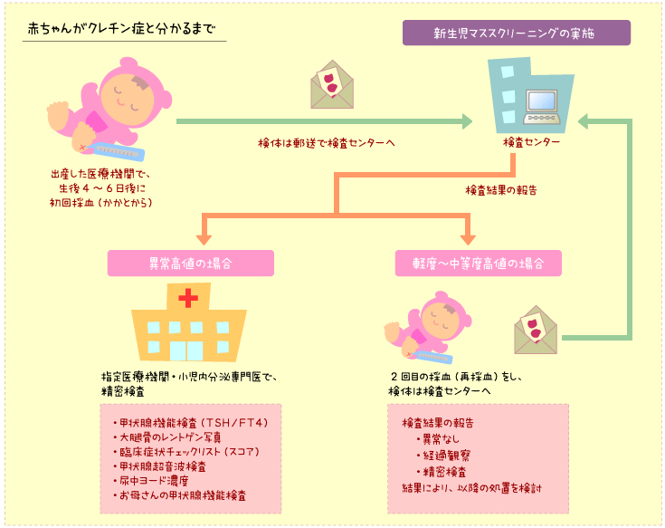
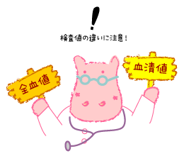

|
Lesson12 : マススクリーニングのしくみ
12-1 マススクリーニングのながれ

マススクリーニングのための採血をされた赤ちゃんのうち、100人中１人くらいにTSHの一時的な異常を認ます。そのため、再検査が必要になりますので、赤ちゃんから濾紙血をもう一度とって（これを「再採血」と言います）スクリーニング検査センターに送り、改めて甲状腺刺激ホルモン（TSH）を測定をします。
12-2 検査値の注意点
|
検査値の評価の際に間違われやすいことがあります。それは乾燥血液濾紙（濾紙血：マススクリーニング時に濾紙に浸し乾燥させた血液）中の、甲状腺刺激ホルモン（TSH）の表示単位のことです。 |
 |
何故このようなことが起こるかを説明します。
血液は液体成分（血清）と細胞成分（赤血球が主で、その他白血球、血小板）に分けられます。一般に血液中の物質は液体成分にも細胞成分にも含まれていますが、TSHだけは細胞成分に含まれていません。また赤ちゃんの液体成分と細胞成分の容積比は1.7：1くらいとなります。そこで全血値（
of whole blood）が10mU/Lの場合、血液10ml中にTSHは0.1mU含まれていますが、液体成分（血清）は約6.25mlですのでその中に0.1mU含まれていることになり、濃度が16mU/Lと計算されます。
例えば濾紙血で甲状腺刺激ホルモン（TSH）の値が「15」だった赤ちゃんが、精密検査で「20」と言われたとします。一見、値が上昇したように思えますが、濾紙血TSH値を血清表示すると約「24」ですから、実は低下しているのです。
こうした細かいことは、普通の医療機関ではあまり説明されることがないので、誤解しないよう注意が必要です。